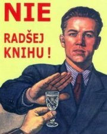

Jsou abstinenti nudní?
Otázek okolo abstinence je spousta. Lze se zamyslet nad tím, proč lidé abstinují (přesvědčení, zdravotní potíže, …), proč lidé naopak alkohol pijí, jak a proč je tomu v naší společnosti a jak je v ní například obtížné být abstinentem.
Co se týče toho posledního, tak musím uznat, že to určitě není snadné. Sám jsem několikrát z různých důvodů abstinoval a minimálně jeden problém je v tom, že člověk v naší zemi utratí za nealko mnohonásobně více peněz než za, jak říká Limonádový Joe, lihovinu. A to má někdy vůbec problém nějakou tu limonádu sehnat.
Abstinenti jsou navíc v okolní bavící se společnosti vnímáni jako cizorodý element. Zkusil jsem z pohledu davu sepsat takovou malou taxonomii těchto stvoření.
Abstinenti, kteří nejsou abstinenty
První skupina jsou lidé, jež se na první pohled jeví jako abstinenti, alkohol však požívají. Většinou se jim hnusí zahlcení vlastního těla řadou panáků nebo desítkou desítek, nějakému posezení nad sklenicí vína či plzínkou se však nebrání.
Tento druh je různou společností vnímán různě a nemyslím, že by byl nějak významně vyčleňován. V některých skupinách samozřejmě může působit zdrženlivě a tudíž nudně.
Blázni, kteří se umí bavit i bez –OH
Tito se do uvolněné společnosti zařadí i bez pomoci drog jakéhokoliv druhu. Jsou od přírody dostatečně ztřeštění, aby se do nálady dokázali dostat i jen tím, že je strhne okolí. Je nutné přiznat, že to často není problém ani pro běžného smrtelníka, ocitne-li se střízliv ve skupině opilých, blázniví abstinenti jsou v tom však přeborníci. Libují si v tom, jak mohou pozorovat ostatní a smát se jim, fotit je, bavit se s nimi.
Tato stvoření jsou obecně alkoholickou společností přijímána vřele. Nevadí jim, že ostatní pijí, no a ti ostatní zase nepoznají, že blázni nepijí. Střet názorů může nastat snad jen ve chvíli, kdy tito střízliví fotografové šíří své úlovky po veřejném prostoru :)
Odmítači ďábla
Poslední skupina zahrnuje tvory, kteří se prostě baví jinak než tím, že něco pijí a potom dělají bláznivé věci. Setrvání s takto se bavící společností je nijak nenaplňuje a proto se tomu často zcela vyhýbají. Pokud se jim to nepovede, dělají vše proto, aby to brzy skončilo.
V prvním případě jsou nudní, ale nikoho tím zase až tolik neotravují. V druhém případě jsou to škůdci, jelikož zábavu sabotují. Nejhorší možné je ale spojení takového abstinenta s běžným smrtelníkem, například v partnerském svazku. Abstinent se potom snaží o zpelíškovatění jejich vztahu a toho druhého nikam nepouští, případně mu to znesnadňuje. Když s partnerem nějakou náhodou skončí s kamarády v hospůdce, dojde stejně brzy na notoricky známou větu my už půjdeme.
Vždyť proč by tam abstinent seděl? Pít alkohol nebude, takže si možná ani neobjedná. A bavit se s ostatními ho po chvíli už začne nudit.
V takovém případě se nejedná z pohledu davu jen o nudný element. Je totiž chápán i jako rafinovaný škůdce, který vám požírá kamaráda a nakonec jej úplně zakuklí do spřadených sítí.